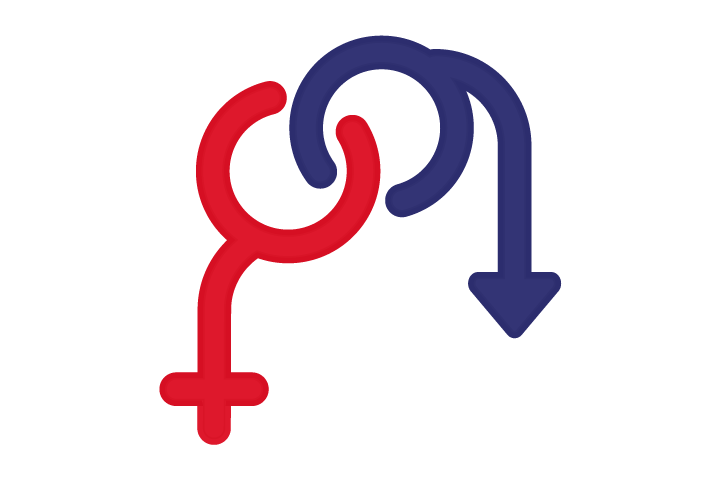

DISFUNCIONES
¿Qué son las disfunciones?
Las disfunciones sexuales tradicionalmente conocidas como trastornos psicosexuales. Estos trastornos se caracterizan por la existencia de una alteración en cualquiera de las fases de la fisiología sexual.
Esta es descrita por Masters y Johnson en cuatro fases: excitación, meseta, orgasmo y resolución; mientras que Kaplan describió tres: la de deseo, la de excitación y la de orgasmo . La clasificación de Masters y Johnson es más fisiológica, en tanto que la de Kaplan, al incluir la fase de deseo y excluir las de meseta y resolución, tiene más en cuenta los aspectos psicológicos de la relación sexual. La disrupcción de alguno de estos podrá tener implicaciones en la vida de los individuos. Ver esquema del tema 1
La nosología de la Organización Mundial de la Salud (CIE-10) incluye a las disfunciones sexuales bajo el título de trastornos mentales o del comportamiento vinculados a disfunciones fisiológicas, junto con los trastornos de la conducta alimentaria, los del sueño y la vigilancia, y el malestar psicológico relacionado con el ciclo menstrual.
Por su parte, el DSM-5 habla de disfunciones sexuales e incluye los siguientes apartados:
DISFUNCIONES SEXUALES DEL DSM-V
- ausencia o retraso persistente o recurrente del orgasmo, tras una fase de excitación sexual normal, en el transcurso de una relación sexual que el clínico, teniendo en cuenta la edad del individuo, considera adecuada en cuanto al tipo de estimulación, intensidad y duración
- Incapacidad, persistente o recurrente, para obtener o mantener una erección apropiada hasta el final de la actividad sexual, que provoca malestar acusado o dificultades de relación interpersonal y no se explica mejor por la presencia de otro trastorno.
- Retraso marcado o ausencia de orgasmo que se identifica ya sea por una infrecuencia/ausencia total o una reducción marcada de la intensidad de las sensaciones orgásmicas.
- Falta o reducción significativa del interés sexual/excitación, que se manifiesta por ausencia/reducción del interés ausente/reducido en la actividad sexual, ausencia/reducción de pensamientos o fantasías sexuales/eróticas, ausencia/reducción de la iniciación de la actividad sexual, y generalmente no es receptivo a los intentos de iniciación de la pareja, ausencia/reducción de la excitación/placer sexual durante la actividad sexual en casi todos o todos (aproximadamente 75% -100%) encuentros sexuales (en contextos situacionales identificados o, si se generaliza, en todos los contextos), ausencia/reducción del interés/excitación sexual en respuesta a cualquier señal sexual/erótica interna o externa (por ejemplo, escrita, verbal, visual) y/o ausencia/reducción de las sensaciones genitales o no genitales durante la actividad sexual en casi todos o todos (aproximadamente 75% -100%) encuentros sexuales (en contextos situacionales identificados o, si se generaliza, en todos los contextos).
- Dolor durante el coito u otra actividad sexual que comporta penetración y la contracción involuntaria de los músculos que rodean la abertura de la vagina (síndrome del elevador del ano o vaginismo), lo que hace que el coito sea doloroso o imposible.
- Falta persistente de interés por realizar ningún tipo de actividad sexual por la parte masculina (aunque también se puede presentar por la parte femenina).
- Se puede a su vez subclasificar en diversas vaiantes que son la eyaculación precoz permanente (cuando ocurre antes de un minuto, es desde siempre y probablemente es de causa genética o neurobiológica), eyaculación precoz adquirida (puede ser psicológica o somática, el varón refiere un momento biográfico claro de inicio), eyaculación precoz natural variable (sólo en determinadas ocasiones se produce, puede diagnosticarse como una variante normal) y disfunción eyaculatoria prematura (incluye a los eyaculadores considerados normales, de 3 a 7 minutos, incluidos los que duran más de diez minutos; estos son los varones que se quejan subjetivamente de una eyaculación precoz, a pesar de la normalidad de sus tiempos, el origen es claramente psicológico).
- Son aquellas disfunciones sexuales en hombres y mujeres causadas por sustancias o medicamentos (alcohol, sedantes, cocaína, etc.).
- Cuando la disfunción masculina o femenina tiene una causa/etiología conocida que no encaja en las clasificaciones anteriores.
- Cuando la disfunción masculina o femenina tiene una causa/etiología no conocida o identificada.

Las disfunciones sexuales pueden tener una etiología orgánica, ser debidas a la ingestión de fármacos, tener un origen psicógeno o ser de causa multifactorial o incierta. Por ello, el diagnóstico exige no solo la especificación del tipo de trastorno, sino la de las características que concurren con él.
Para su detección será necesaria una exploración médica multidisciplinaria (ginecológica, urológica, neurológica, etc.), que acompañe la exploración psicológica y psicopatológica.
Entre los factores psicógenos se han señalado:
- •Actitudes negativas hacia la sexualidad
- •Cultural
- •Educacional
- •Miedo a fracasar en la relación sexual
- •Historial con experiencias desagradables en relación con el sexo
- •Conflictos inconscientes que se expresan simbólicamente en el fracaso sexual
- •Sentimientos de angustia, miedo y culpabilidad vinculados a un complejo edípico no resuelto